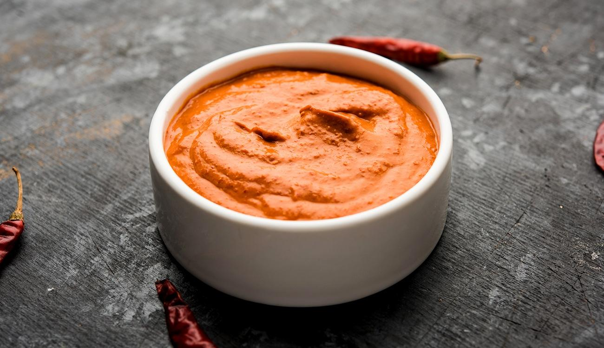

Return to home page
Pepper sauce

Description
A receita de molho de pimenta caseiro é do time: ame ou odeie. Não há um meio termo para aqueles que gostam ou
não de refeições mais picantes.
Para aqueles que são do time de quanto mais pimenta melhor, ou um pouquinho não faz mal, veja algumas receitas
incríveis.
São diversas opções para você evitar precisar comprar molhosprontos conseguir fazer um caseiro delicioso echeio
de sabor.Depois dessa deliciosa receitinha, deixaremos mais uma séridevariações de molhos deliciosos para você
vermais opções.
Ingredients
- 400g de pimenta fresquinha da sua preferência;
- 1 colher (chá) de açúcar;
- 1 colher (chá) de sal – se desejar pode adicionar mais;
- 150ml de vinagre branco ou algum da sua preferência;
- 100 a 200ml de água;
- 100ml de molho de tomate;
- 1 dente de alho picado em pedaços grandes;
- 2 folhas de louro fresco ou seco;
- 3 unidades de cravo da índia;
- 100ml de azeite ou óleo;
- 1 cebola picada em pedaços grandes;
Phases
- Descarte os cabinhos da pimenta, mas deixe as sementes se quiser bem picante – se desejar menos, retire as sementes;
- Pique as pimentas em pedaços grandes;
- Em uma panela adicione as pimentas, a cebola, o alho, o louro, os cravos da índia, orégano, açúcar, sal, vinagre e a água;
- Adicione o molho de tomate e o azeite ou óleo;
- Cozinhe essa mistura com panela tampada por cerca de 10 minutos, ou até cozinhar bem a cebola e a pimentinha que escolheu;
- Desligue o fogo e coloque a mistura no liquidificador;
- Retire as folhas de louro e bata essa mistura muito bem;
- Guarde em um vidro bem higienizado e espere esfriar para só então tampar;
- Conserve na geladeira.